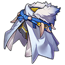

추천 광추
이와 같이 타오르는 여명
속도·방어력 무시, 필살기 이후 피해
효과 자세히
기초 속도 +12, 방어력 18% 무시. 필살기 후 자신의 다음 턴이 시작되기 전까지 피해 +60%.
어떤 에이언즈의 몰락
공격력 중첩과 약점 격파 후 일반 피해 증가
효과 자세히
공격 발동 시 이번 전투에서 공격력이 16% 증가. 해당 효과 최대 중첩수: 4스택. 장착한 캐릭터는 적의 약점을 격파한 후 가하는 피해가 24% 증가. 지속 2턴
비밀 맹세
피해 증가, 자신보다 HP 비율이 높은 적에게 추가 피해
효과 자세히
가하는 피해가 40% 증가하며, 동시에 현재 HP 백분율이 장착한 캐릭터 자신의 HP 백분율 이상인 적에게 가하는 피해가 추가로 40% 증가
추천 유물
지식의 바다에 빠진 학자 4 · 회전을 멈춘 살소토 2
- 머리
 주옵션HP부옵션치명타 확률 · 치명타 피해 · 속도 · 공격력%
주옵션HP부옵션치명타 확률 · 치명타 피해 · 속도 · 공격력% - 손
 주옵션공격력부옵션치명타 확률 · 치명타 피해 · 속도 · 공격력%
주옵션공격력부옵션치명타 확률 · 치명타 피해 · 속도 · 공격력% - 몸통
 주옵션치명타 확률 / 치명타 피해부옵션치명타 확률 (주옵션 제외) · 치명타 피해 (주옵션 제외) · 속도 · 공격력%
주옵션치명타 확률 / 치명타 피해부옵션치명타 확률 (주옵션 제외) · 치명타 피해 (주옵션 제외) · 속도 · 공격력% - 다리
 주옵션속도 / 공격력%부옵션치명타 확률 · 치명타 피해 · 속도 (주옵션 제외) · 공격력% (주옵션 제외)
주옵션속도 / 공격력%부옵션치명타 확률 · 치명타 피해 · 속도 (주옵션 제외) · 공격력% (주옵션 제외) - 구체
 주옵션얼음 피해 증가부옵션치명타 확률 · 치명타 피해 · 속도 · 공격력%
주옵션얼음 피해 증가부옵션치명타 확률 · 치명타 피해 · 속도 · 공격력% - 매듭
 주옵션공격력%부옵션치명타 확률 · 치명타 피해 · 속도
주옵션공격력%부옵션치명타 확률 · 치명타 피해 · 속도
이 조합을 추천하는 이유
학자 4세트는 스킬·필살기 피해를 늘립니다. 살소토는 전투 치명타 확률 50% 이상에서 필살기 피해 +15%.
혹한 밀림의 사냥꾼 4 · 창공 전선 그라모스 2
- 머리
 주옵션HP부옵션치명타 확률 · 치명타 피해 · 속도 · 공격력%
주옵션HP부옵션치명타 확률 · 치명타 피해 · 속도 · 공격력% - 손
 주옵션공격력부옵션치명타 확률 · 치명타 피해 · 속도 · 공격력%
주옵션공격력부옵션치명타 확률 · 치명타 피해 · 속도 · 공격력% - 몸통

주옵션치명타 확률 / 치명타 피해부옵션치명타 확률 (주옵션 제외) · 치명타 피해 (주옵션 제외) · 속도 · 공격력% - 다리
 주옵션속도부옵션치명타 확률 · 치명타 피해 · 공격력%
주옵션속도부옵션치명타 확률 · 치명타 피해 · 공격력% - 구체
 주옵션얼음 피해 증가부옵션치명타 확률 · 치명타 피해 · 속도 · 공격력%
주옵션얼음 피해 증가부옵션치명타 확률 · 치명타 피해 · 속도 · 공격력% - 매듭
 주옵션공격력%부옵션치명타 확률 · 치명타 피해 · 속도
주옵션공격력%부옵션치명타 확률 · 치명타 피해 · 속도
이 조합을 추천하는 이유
설원 4세트는 얼음 피해와 필살기 후 치명타 피해를 보강합니다. 그라모스 피해 +12%는 전투 속도 135부터.
이 정도면 잘 키웠다
동일 파티·광추 기준 · 조건 [*]
| 스탯 | 추천 스탯 | 준종결 | 종결 |
|---|---|---|---|
| 치명타 확률 [*] 살소토 발동은 50%. 치명타 확률을 먼저 확보하세요. | 65% | 70% | 70%+ |
| 치명타 피해 [*] 설원 세트를 쓰는 경우 필살기 사용 후 보너스를 합산. | 120% | 125% | 130%+ |
| 공격력 [*] 속도 신발과 광추에 따라 조정. | 2,000 | 2,200 | 2,400+ |
| 속도 [*] 고속 스파클과 편성하면 공격력 신발 비교. | 134 | 134+ | 행동 지원 맞춤 |
육성 단계의 기준
Lv.80 · 5성 유물 +15. Prydwen 참고 범위와 발동 조건을 바탕으로 나눈 편집 목표입니다.
성혼과 추천 돌파
성혼 2는 다단 필살기에서 방어력 감소를 노릴 수 있고, 성혼 6은 파티 포인트 부담을 낮춥니다.
1필살기 적 수만큼 공격 +1~5단
필살기 발동 시 필드 위 적 1명당 해당 필살기 공격 단수가 추가로 1단 증가하며, 최대 추가로 5단까지 증가
2필살기 타격마다 방어력 −16% 부여 시도추천
필살기의 단수별 공격 전 24%의 기본 확률로 목표의 방어력을 16% 감소시킨다. 지속 3턴
3필살기 +2 · 일반 공격 +1
필살기 +2 · 일반 공격 +1
4필살기 타격당 피해 배율 +6%p
필살기의 단수별 공격 피해 배율이 6% 증가
5전투 스킬 +2 · 특성 +2
전투 스킬 +2 · 특성 +2
6필살기 피해 +30%·다음 스킬 후 포인트 +1pt추천
필살기 발동 시, 자신이 가하는 피해가 자신의 턴이 종료될 때까지 30% 증가하며, 다음 전투 스킬 발동 후 아군이 전투 스킬 포인트를 1pt 회복
추천 파티


기본 운영과 행적
기본 운영
동료가 스킬 포인트를 사용하면 필살기 공격 단수와 에너지가 차오릅니다. 정예 한 명만 남았을 때 바운스 공격을 집중하거나, 첫 타격 빙결로 위협적인 적을 멈추세요.
행적 우선순위
필살기 = 전투 스킬 > 특성 > 일반 공격. 필살기의 첫 공격 빙결 확률을 높이는 행적을 해금하세요.
아하 속도 계산기 →기준과 출처 · 2026-11-25
4.7 · 한국어 게임 데이터 및 Prydwen 육성 분석